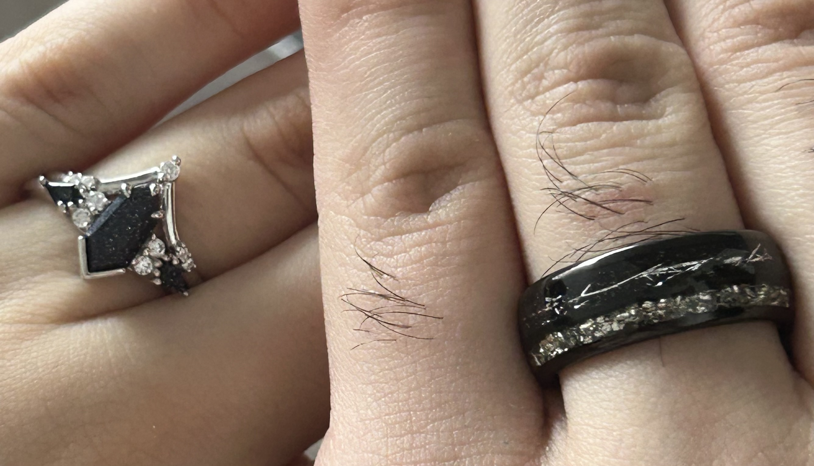
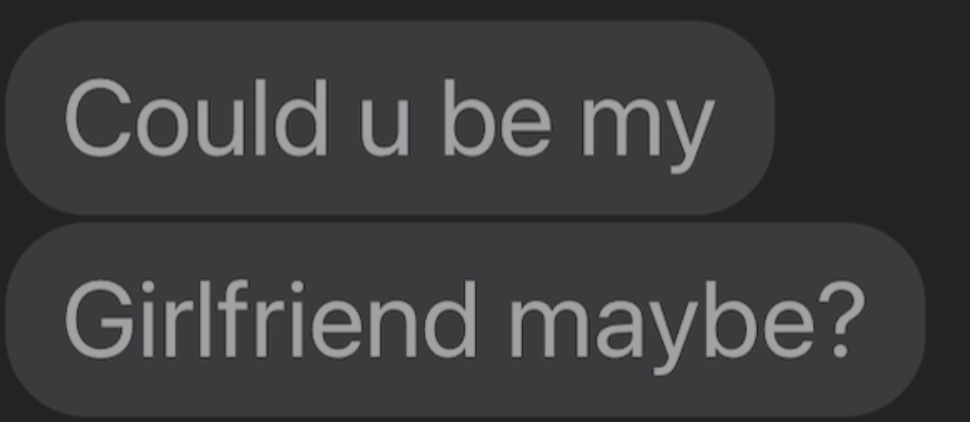
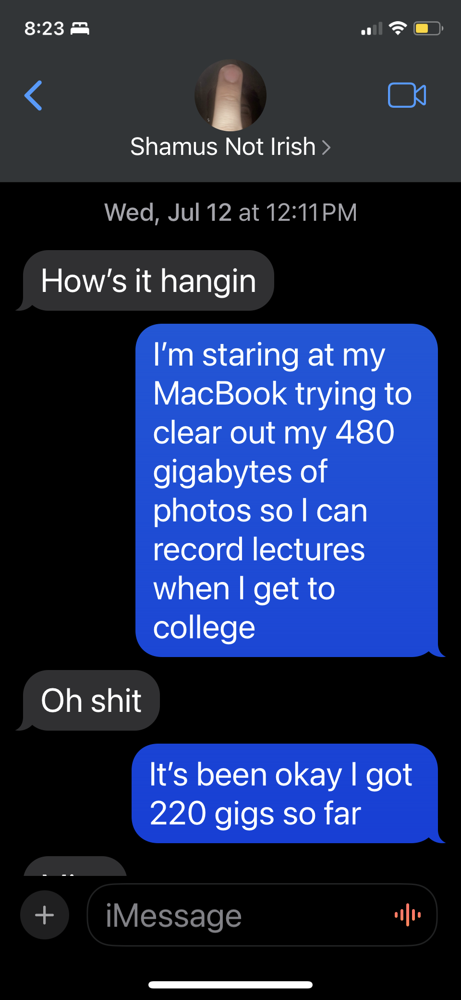
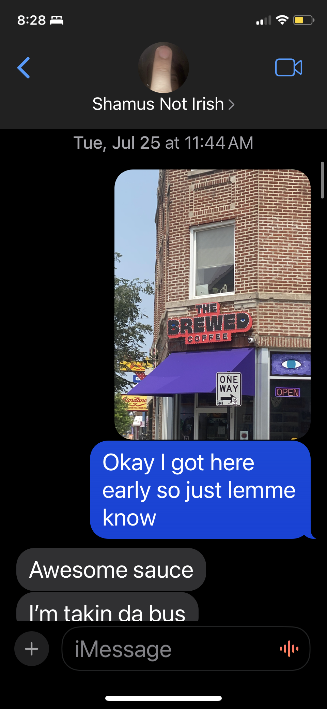

march 3rd 2025 shamus birthday - i arrainged a scavanger hunt for him and made us matching birthday t shirts by hand in the printmaking facility at school.
feb 14th 2025 valentines day w shamus - he got us new rings 
December 4th 2024 Shamus noticed I was sad he was leaving my dorm to go home to his family (i was pmsing) so he started trying to procrastinate leaving and I started crying a little bit and I told him to go but he wiped my tear and started to pick up a starfish and he was like “what is this?” And I was like “put that back - go shamus” and he was like “I can't go there are too many things I have questions about in your room”
nov 5th 2024 Shamus's parents took me out for a birthday dinner (for my birthday!) and Dina bought me a new coat!!
June 18th I was on my e-bike and I hit the car and I called shamus and he said he would pick me up in a heartbeat (but I already called my mom and she was almost there) so i called shamus and he stayed on the phone with me until she got there while he was at work (because I sent Ivan away to bike back home) and I told him I didn't want him to pick me up bc what if he got fired and he said “Logan the only reason I have this job is to make money for our future, if it gets in the way of me being there for your present then it's dropped. This job is useless if I can't be there for you because of it because I know I can be there with you without it.”
may 19th 2024 Shamus met my family! Mom mimi Kevin Chloe Brixton and norrin and me had two big pizzas for dinner - one chicken and taco and one sausage/ the dinner went very well.
april 2nd My iPhone means nothing if I don't get to call Logan
march 3rd 2024 shamus birthday (we had an urbana themed birthday) i booked us a hotel room at the Urbana hotel and we he got to see all of his friends who went to u of i and i got to see my friend ragen and we had an awesome weekend with lots of outdoor time and i had my coffee from a robot arm
feb 28th from shamus: Ur hotness is one of the constants of the universe
feb 8th from shamus: Because u saw me when I felt invisible.
feb 7th 2024 Gave me promise ring and took me to Trader Joe's
nov 23rd (thanksgiving) from shamus : Ive had time to think And I realized That part of the reason I was so disinterested in relationships before you was because I already assumed Id fail/ruin the relationship that I wouldn’t be good enough for anyone because Id be too silly or goofy and that it would be annoying. But with you you like that im goofy and not just in a sense where im performative. You accept me when im stupid and goofy but you still treat me like seriously I love that. This relationship for me is partially like the ultimate gift I can give you. Which is why, I will tend to it and nurture it for us and always reserve time and energy and love for it. Even if you can't I have an appetite for two and with that comes energy and love for two. And time isn't ever an issue
oct 30th from shamus I'll love you no matter how much you change, because I love you in an intrinsically foundational way. I fell in love with you. I have never felt so alive.
oct 24 2023 from shamus 10/24 I feel like I've lived my life underwater and you found me in the middle of the ocean and you saved me with your lux yacht boat
Deep within equivalent to a star My heart feels the weight from your mere presence So my emotions smothered inside Produce pressure that encases my heart At first I could handle it But I’d find your presence in my mind Bottling my true feelings for you Made me weaker with the passing of time So I text and I text and I text you. Which causes my heart to pump faster, countering the pressure so that It wouldn’t collapse in on itself forever. Like our own very sun forever sentenced to burn fuel or collapse in on its own gravity. But this act makes my heart condense more as I catch even more feelings for you. The ammounting pressure won’t stop. So I ask you a question I have never asked before. A proposition I never considered until you. Do you want to go on a date with me? And in your passion I found myself to be lost and uncertain and in a place where I couldn’t shield myself. But I found, that this gave the pressure within a new purpose. I relished in it now and The pressure turned into energy unlike anything before. Like our own solar system. You are the only star I find myself orbiting (: Which is fitting, for you and the sun were made with the same cosmic dust. Im your earth and as I embrace the light you give, it fills me with life.
Hey Logannn!!!! Third letter!!!!!! I am doing good! I still miss you! Did you know that no one wears seat belts? Theyre stuck inside the cushion too so I cant help but not wear them also Egypt has better candy frfr but in exchange, all internet is dogshit that craps itself once a piece of paper is between you and the router. Idk if thats always the case but it feels like it everytime i try to access ANY ROUTER. Dudeeee you play so much smash bros btw. R u like getting exponentially better now? Cause u always play it! I found a cool thing i want to get but my grandma literally forbid it because she thought I would get the curse of the pharaoh??????? Im still getting it. Just when shes not noticing (:<. That emoji took two minutes for me to get correctly. Swedish ambassador lives in egypt like ten minutes away from me. Its kind of crazy I kind of did nothing today while doing everything. Grocery shopping for two hours just to get 5 ITEMS. Then i took a well needed napppp. Also whats ur favorite number. My guess is 4. Sincerely yours Shamus Ryman
Hey Logan, its me again. Did you know the hotels in Egypt are fucking humongous???? I mean like THERES TWO BEDROOMS A FULL KITCHEN WITH A WHOLE FRIDGE AND LIKE THE FUCKING BEDROOM IM IN IS TWICE THE VOLUME OF MY ACTUAL REAL ROOM I LIVE IN EVERDAY!!!!!!! Anyways, I wanted to let you know that. Also, there are random stray dogs and cats EVERYWHERE. # freepetswheneveryouwant. I must add that I met my uncle and grandma they’re cool. My uncle is a smoker though lol which i find interesting. He was smoking the whole time we initially met at the airport in the car and when we dropped off at the hotel. I am so pissed that I have no adapter for the weird outlets. theres ONLY ONE USB PORT AND ITS IN THE FUCKING TV SO EVERYTIME I WANT TO CHARGE MY PHONE I HAVE TO TURN ON THE TV. Egypt feels very consumerism core so I think that’s something you’d appreciate. Logan I forgot to ask but what’s your favorite animal and whats your favorite flavor of ice cream? My guess is purple/green and vanilla. What was your favorite band/performance at RIOT FEST btw?
sept 16th 2023 his mom shipped him off to egypt! literally! it is our first year of college and it is his first semester. and he left for two weeks right at the start. I have him a shashibo to take on the plane ... and it was the only thing he had to entertain himself for fourteen hours of travel. so he did what every boy who is in his first relationship does, he wrote me letters. Hey Logan!!! It's me shamus, guess what! My heart is STILL palpitating, so clearly I’m not dead yet. I miss you already??? Woaaaahhh. It's weird knowing that im fucking 9 hours ahead? Like its still Saturday for u and Saturday is almost over for me. Its only 1:00 PM for you right now as I type this. Wowwww. Anywho I feel soooo sadddd I left you ); AAAAAAAAAAA THE PLANE IS TAKING OFFF HOLY DHIT IT JUST ACCELERATED FUCK I WASNT PAYING ATTENTION I WAS WRITI NG THIS FUCKING LETTER!!!!!’nn okay this is me after that we are good. I wanna know all the details while im gone lmk whenever, also Ill come up with plans for hangouts/dates nd shit for when I come back, i cant believe you're crocheting a hat for me!!!!! Maybe I should pickup and arts and craft thing do I can make shit for you… Holy shit i have the best idea, but I wont tell you what it is because that’d ruin the surprise. Also I'm hungry. Being thousands of feet in the air makes me starve. Idk why this is dumb, my mom is the opposite she doesn’t eat shit while flying. Im going to be honest, I literally can’t stop thinking about food. I think that me thinking of food this whole time is giving me a headache. I’ll stop thinking about it. Also i googled the dumvass walnut questions and IM RIGHTTTTTT GOOGLE FUCKING AGREEES WITH ME!!!! YOUR TEACHER IS A DUMBBBYYYY. Also, I am thinking of writing a poem for you, but I am honestly embarrassed so I think I'll do something else. THEY MENTIONED A MENUUUUUU OOOOOHHHH FOOD????. Sorry, my bad! Logan I misss you so much so muuuchhh. I think you're rubbing off me btw I noticed I habe picked up a few of your mannerisms (: This is the end of my first letter Logan!!! Do i send this virtually or actually mail it? Fuck that Ima send this one to you via messages or discord. Sincerely, Yours Aka Shamus Ryman
sept 5th 2023 (a day after his sisters birthday) 
August 31st we went to the art institute
Aug 30th 2023 we had shitty pizza and he almost killed me on the drive back to the dorm to play grocery bingo
july 12th 2023 shamus reached out to me.. these our our first text messages ever.  then i invited him to a cafe hangout where i could see him in person  and we just started talking from there, instant chemistry, it was literally love at first sight.
physical computing past